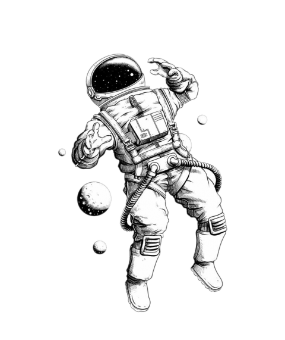

|  |
About UsAt Splog, we are passionate about all things space. Our mission is to bring the wonders of the universe closer to you through captivating content, informative articles, and engaging discussions. Whether you're an amateur stargazer, a dedicated space enthusiast, or simply curious about the mysteries of the cosmos, our blog is your go-to destination. |
This composite image contains X-ray data from NASA's Chandra X-ray Observatory and the ROSAT telescope (purple), infrared data from NASA's Spitzer Space Telescope (orange), and optical data from the SuperCosmos Sky Survey (blue) made by the United Kingdom Infrared Telescope.....